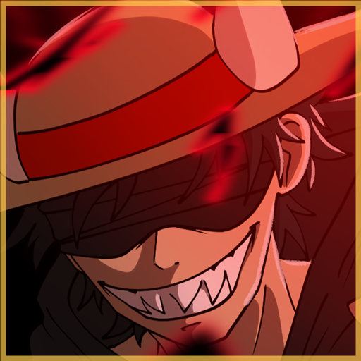
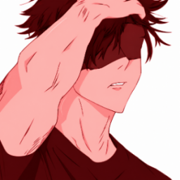

Ton personnage
10 classes, 9 fruits et 8 armes. Fais progresser ton niveau, ta prime et la maitrise de ton fruit jusqu'a l'eveil.

WarsNutoGameBeta jouable / RPG communautaire
Bienvenue dans ton aventure One Piece. Choisis ta classe, pars explorer les mers, trouve ton fruit et construis ton equipage. Entre deux missions, navigue aussi longtemps que ton navire tient.

Ton parcours
10 classes, 9 fruits et 8 armes. Fais progresser ton niveau, ta prime et la maitrise de ton fruit jusqu'a l'eveil.
6 missions, 5 zones et des objets a utiliser. Prepare tes ressources: les missions comportent des risques et les actions ont leurs temps de recharge.
Combats au tour par tour, coffre commun, saisons et classements. Les boss serveur proposent un combat individuel aux joueurs du niveau requis.
Un mode sans cooldown avec combats en plusieurs tours, tempetes, tresors pieges et ports marchands. Gere les PV du navire et securise ta cargaison avant le naufrage.
Les modules et commandes se chargent...